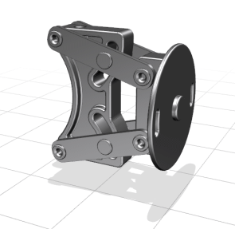
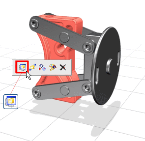
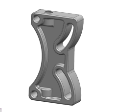

将装配中的部件设为工作部件有利于进行关联设计，但在某些设计场合中您可能想隔离某个部件或子装配，而不显示装配中的其它部件。
在装配导航器中，右击 des03_wall_mount_linkage_assm 并选择设为显示部件。

连接杆装配文件现在既是显示部件，又是工作部件。
在装配导航器中，由于连接杆是显示部件，因此它位于装配树的最顶端。
在图形窗口中，选择竖直支架，然后从关联菜单中选择设为显示部件 。


在装配导航器中，由于竖直支架为显示部件，因此它也是仅有的项.